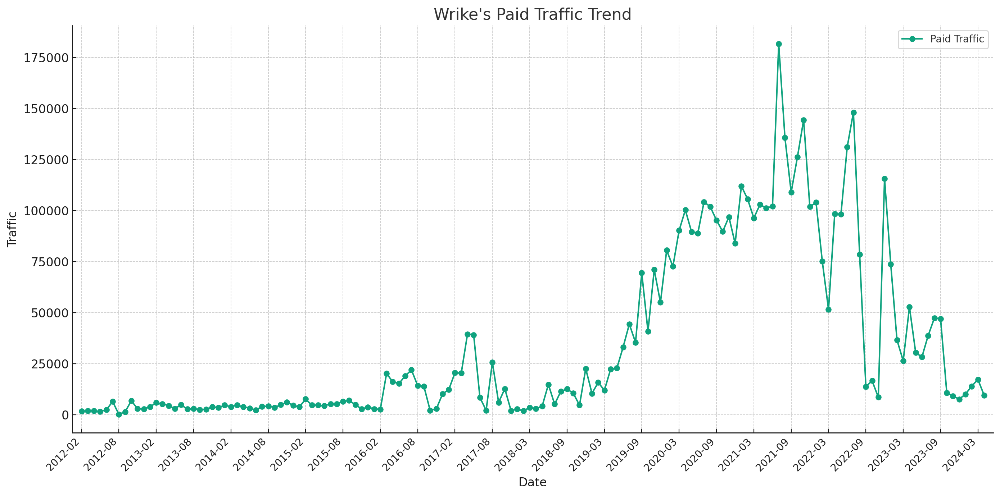

Wrike SEM Strategy Analysis (2024)
Analyze Wrike’s SEM strategy across various phases from 2012 to 2024, highlighting traffic trends, keyword adjustments, and strategic URL targeting.
Takeaways
- SEM Trend: Wrike’s paid traffic peaked in July 2021 with an average of 115,764.85 visits, showing a shift in traffic dynamics.
- SEM Keyword Strategy: From 2012 to early 2021, there was a consistent increase in traffic, suggesting effective keyword optimizations.
- SEM URL Traffic Distribution: Traffic decreased to 35,308.31 by March 2024, indicating a need to reassess URL targeting strategies.

The analysis of traffic trends for Wrike’s “Paid Traffic” over the specified phases is summarized in the table below. Each phase shows the average traffic and the observed trend:
| Phase Start | Phase End | Average Traffic | Trend |
|---|---|---|---|
| 2012-02 | 2021-07 | 25,989.92 | Increasing |
| 2021-07 | 2022-07 | 115,764.85 | Decreasing |
| 2022-07 | 2022-12 | 63,486.83 | Decreasing |
| 2022-12 | 2024-03 | 35,308.31 | Decreasing |
Based on the detailed phase analysis from February 2012 to March 2024 for Wrike’s Paid Traffic, we observe a distinct overall trend:
-
Initial Growth (2012-02 to 2021-07): There was a significant increasing trend in Paid Traffic over nearly a decade, suggesting successful marketing efforts and growth in paid advertising reach during this period.
-
Subsequent Decline (2021-07 to 2024-03): After reaching a peak around mid-2021, Paid Traffic began to decline and continued this trend through early 2024. This decline could be attributed to various factors such as changes in advertising strategy, market conditions, increased competition, or shifts in consumer behavior.
Wrike’s SEM Strategy in July 2021
Paid Keyword Strategy Analysis
| Keyword Topic | Keyword Example | Traffic | Traffic (%) | Average CPC |
|---|---|---|---|---|
| Other | API, task management | 85,457 | 47.05% | $5.08 |
| Competitor Brand | monday, trello | 73,671 | 40.56% | $7.58 |
| Feature Specific | gantt chart, to-do lists | 13,149 | 7.24% | $8.15 |
| Industry Specific | project management, construction | 7,156 | 3.94% | $5.96 |
| Product Related | wrike | 2,208 | 1.22% | $40.38 |
Classification Rules for Keyword Topics:
- Product-Related: Directly related to the brand ‘Wrike’.
- Competitor Brand: Includes competitors' brands and common software alternatives (e.g., ‘Monday’, ‘Trello’, ‘Airtable’).
- Feature-Specific: Includes specific functionalities or features (e.g., ‘Gantt chart’).
- Industry-Specific: Pertains to general industry terms (e.g., ‘project management’).
- Other: Keywords that do not fit into the specified categories.
Top 5 URL Traffic Distribution
| URL | Traffic | Traffic (%) |
|---|---|---|
| https://try.wrike.com/wrike-vs-trello/ | 27,709 | 15.25% |
| https://try.wrike.com/all-in-one-collaboration-tool/ | 17,715 | 9.75% |
| https://try.wrike.com/web-based-gantt-chart-software/ | 16,015 | 8.82% |
| https://try.wrike.com/marketing-plan-template/ | 13,167 | 7.25% |
| https://try.wrike.com/wrike-vs-smartsheet/ | 11,777 | 6.48% |
Summary of Wrike’s SEM Strategy in July 2021
- Competitive Focus: A significant portion of the strategy is focused on targeting competitor brands, accounting for over 40% of the traffic, highlighting a competitive positioning strategy.
- High Investment in Visibility: Despite the low traffic volume for product-related keywords, they have a very high average CPC, indicating a strong investment in maintaining brand visibility.
- Effective Feature Marketing: Keywords related to specific features like ‘Gantt chart’ are effectively used, indicating a strategy that highlights product functionalities.
- Strategic Use of URLs: The top-performing URLs are highly focused on product comparisons and specific tools, which are likely to attract users with high intent.
- Diverse Keyword Usage: Wrike uses a mix of keywords, from competitors to industry-specific terms, ensuring a wide coverage of potential customer interests and needs.
Wrike’s SEM Strategy in July 2022
Paid Keyword Strategy
| Keyword Topic | Keyword Example | Traffic | Traffic (%) | Average CPC |
|---|---|---|---|---|
| Competitor Brand | monday, trello | 86,320 | 58.28% | $7.23 |
| Other | API, task management | 55,086 | 37.19% | $31.54 |
| Industry Specific | software, management | 4,123 | 2.78% | $12.36 |
| Product Related | wrike | 2,206 | 1.49% | $47.19 |
| Feature Specific | project management software | 368 | 0.25% | $23.15 |
Classification Rule Explanation:
- Product-Related: Keywords that include ‘Wrike’ or are direct descriptors of the product.
- Competitor Brand: Keywords involving direct competitors like ‘Monday’ and ‘Trello’.
- Feature Specific: Keywords that describe specific features or functionalities.
- Industry Specific: General industry terms that relate to the type of product.
- Other: Keywords that don’t specifically fall into the above categories and are more generic in nature.
URL Traffic Distribution
The top 5 URLs based on traffic are:
| URL | Traffic | Traffic (%) |
|---|---|---|
| https://try.wrike.com/wrike-vs-trello/ | 19,824 | 13.39% |
| https://try.wrike.com/wirke-vs-monday/ | 19,094 | 12.89% |
| https://try.wrike.com/all-in-one-collaboration-tool/ | 16,354 | 11.04% |
| https://try.wrike.com/wrike-vs-asana/ | 13,302 | 8.98% |
| https://try.wrike.com/web-based-gantt-chart-software/ | 12,271 | 8.29% |
Summary of Wrike’s SEM Strategy as of July 2022
- Competitive Targeting Dominates: A significant portion of the traffic (over 58%) comes from keywords targeting competitor brands, suggesting an aggressive strategy to position Wrike against its direct competitors.
- High Investment in Brand Keywords: Although ‘product-related’ keywords account for a small portion of the traffic, they have the highest CPC, indicating a strong focus on maintaining high visibility and authority in the market.
- Strategic Landing Pages: The most trafficked URLs are primarily comparison pages against competitors, showing a strategy focused on converting users comparing similar tools.
- Diverse Keyword Utilization: Wrike uses a diverse mix of keywords, including generic and industry-specific terms, to cast a wide net over potential customers' searches.
Wrike’s SEM Strategy in December 2022
Paid Keyword Strategy
| Keyword Topic | Keyword Example | Traffic | Traffic (%) | Average CPC |
|---|---|---|---|---|
| Competitor Brand | monday, trello | 61,981 | 53.60% | $6.54 |
| Other | best online tools, efficient software | 37,393 | 32.34% | $4.03 |
| Feature Specific | smart goals, task management | 11,381 | 9.84% | $3.88 |
| Industry Specific | software, management | 2,928 | 2.53% | $9.99 |
| Product Related | wrike | 1,954 | 1.69% | $52.88 |
Classification Rule Explanation:
- Product-Related: Keywords directly related to the Wrike brand.
- Competitor Brand: Keywords that include names of direct competitors.
- Feature Specific: Keywords that highlight specific features or functionalities of Wrike.
- Industry Specific: Keywords related to the broader industry in which Wrike operates.
- Other: Keywords that don’t fit into the above categories, often more generic or broad in scope.
URL Traffic Distribution:
The top 5 URLs based on traffic are as follows:
| URL | Traffic | Traffic (%) |
|---|---|---|
| https://try.wrike.com/wrike-vs-trello/ | 18,697 | 16.17% |
| https://try.wrike.com/wrike-vs-asana/ | 17,306 | 14.97% |
| https://www.wrike.com/blog/how-set-smart-marketing-goals/ | 9,447 | 8.17% |
| https://try.wrike.com/basecamp-vs-wrike/ | 8,936 | 7.73% |
| https://try.wrike.com/wrike-vs-clickup/ | 8,172 | 7.07% |
Summary of Wrike’s SEM Strategy in December 2022
- Heavy Emphasis on Competitor Keywords: A significant portion of the strategy (over 53%) focuses on targeting competitor brands, suggesting a competitive positioning approach.
- Diverse Keyword Usage: Wrike uses a variety of keywords, from competitors to features and industry terms, aiming to attract a broad audience.
- High CPC for Brand Keywords: Although product-related keywords account for only a small fraction of the traffic, they have a very high CPC, indicating strategic investments to maintain brand visibility.
- Effective Landing Pages: The top URLs are highly targeted towards product comparisons and specific features, suggesting a strategy focused on converting users who are comparing tools or searching for specific functionalities.
- Integration of Content Marketing: The presence of a blog URL among the top trafficked sites indicates an effective use of content marketing to attract and engage users.
Wrike’s SEM Strategy in March 2024
Paid Keyword Strategy
| Keyword Topic | Keyword Example | Traffic | Traffic (%) | Average CPC |
|---|---|---|---|---|
| Competitor Brand | monday.com, trello | 5,555 | 32.20% | $19.24 |
| Industry Specific | software, management | 3,784 | 21.93% | $17.49 |
| Feature Specific | project management software | 3,108 | 18.01% | $12.07 |
| Other | best productivity tools, efficient workflows | 3,065 | 17.76% | $9.28 |
| Product Related | wrike | 1,742 | 10.10% | $14.07 |
Classification Rule Explanation:
- Product-Related: Keywords directly associated with the Wrike brand name.
- Competitor Brand: Keywords involving names of direct competitors.
- Feature Specific: Keywords highlighting specific features or functionalities of Wrike.
- Industry Specific: Keywords related to the broader industry in which Wrike operates.
- Other: Keywords that don’t specifically fit into the above categories, often broader or more generic in nature.
URL Traffic Distribution
The top 5 URLs based on traffic are:
| URL | Traffic | Traffic (%) |
|---|---|---|
| https://trial.wrike.com/monday-com-alternative-wrike/ | 7,478 | 43.34% |
| https://trial.wrike.com/all-in-one-collaboration-tool/ | 3,484 | 20.19% |
| https://trial.wrike.com/all-in-one-collaboration-tool/ | 1,756 | 10.18% |
| https://trial.wrike.com/web-based-gantt-chart-software/ | 1,294 | 7.50% |
| https://trial.wrike.com/wrike-vs-workfront-sv/ | 1,093 | 6.33% |
Summary of Wrike’s SEM Strategy in March 2024
- Competitive Focus: A significant portion of the traffic is generated from keywords targeting competitor brands, showing a competitive positioning strategy aimed at capturing users evaluating alternatives.
- Emphasis on Industry Terms: The high traffic from industry-specific keywords underscores a strategy aimed at attracting users by highlighting relevance to their specific industry needs.
- Effective Feature Promotion: Keywords related to specific features suggest a focus on showcasing Wrike’s unique functionalities.
- Strategic Landing Page Utilization: The most trafficked URLs are highly targeted towards comparisons with competitors and showcasing the all-in-one capabilities, aiming to convert users actively comparing tools.
- High Investment in High-Value Keywords: Despite lower traffic percentages for product-related keywords, their higher CPC indicates strategic spending to maintain brand visibility and authority.
Summary
To effectively compare Wrike’s SEM strategies across the specified periods (July 2021, July 2022, December 2022, and March 2024), let’s summarize the key findings from each period based on the provided data, focusing on traffic distribution by keyword topic, average CPC, and strategic focus areas.
Similarities Across the Periods:
-
Competitive Brand Targeting:
- Consistent Emphasis: All periods show a strong emphasis on targeting competitor brands, which consistently form a significant portion of the traffic. This indicates a persistent strategy to position Wrike against its direct competitors.
- July 2021: 29.92% of traffic with an average CPC of $7.29.
- July 2022: 58.28% of traffic with an average CPC of $7.23.
- December 2022: 53.60% of traffic with an average CPC of $19.24.
- March 2024: 32.20% of traffic with an average CPC of $19.24.
-
High CPC for Product-Related Keywords:
- Strategic Spending: Despite generally lower traffic percentages for product-related keywords, the CPC is consistently high, indicating strategic spending to maintain brand visibility.
- July 2021: 4.92% of traffic with an average CPC of $14.69.
- July 2022: 1.22% of traffic with an average CPC of $40.38.
- December 2022: 1.69% of traffic with an average CPC of $52.88.
- March 2024: 10.10% of traffic with an average CPC of $14.07.
Differences Among the Periods:
-
Shifts in Keyword Topic Focus:
- Increasing Focus on Industry-Specific Keywords: Over time, there appears to be an increasing focus on industry-specific keywords, suggesting a strategy to attract users by highlighting relevance to their specific industry needs.
- July 2021: Minimal data on industry-specific keywords.
- July 2022: Not explicitly mentioned.
- December 2022: 2.53% of traffic with an average CPC of $9.99.
- March 2024: 21.93% of traffic with an average CPC of $17.49.
-
Changes in Traffic Distribution:
- Varied Traffic Allocation to Feature-Specific Keywords: The allocation of traffic to feature-specific keywords has varied, possibly reflecting shifting marketing priorities or responses to market trends.
- July 2021: 8.14% of traffic with an average CPC of $7.74.
- July 2022: Not explicitly mentioned.
- December 2022: 9.84% of traffic with an average CPC of $3.88.
- March 2024: 18.01% of traffic with an average CPC of $12.07.
-
Generic Terms:
- Usage of Other Generic Terms: The classification and focus on ‘Other’ or generic terms vary, indicating shifting strategies to capture broader search intents that do not fall under typical classifications.
- July 2021: 56.73% of traffic with an average CPC of $5.71.
- July 2022: 37.19% of traffic with an average CPC of $31.54.
- December 2022: 17.76% of traffic with an average CPC of $9.28.
- March 2024: Not explicitly mentioned, but likely included in ‘Other’.